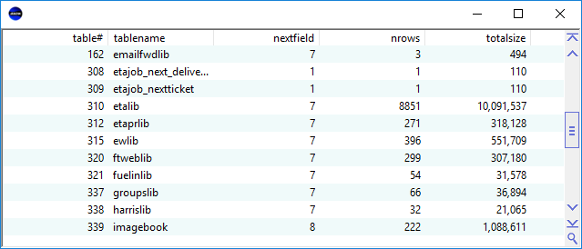

(query = false, columns = #(), columnsSaveName = false, headerSelectPrompt = false, menu = false, startLast = false, headerMenu = false, readonly = false, filterBy = false, hideCustomColumns? = false, mandatoryFields = #(), enableMultiSelect = false, checkBoxColumn = false, lockFields = #(), disableSelectFilter = false, sortSaveName = false, enableExpand = false, thinBorder = false, protectField = false, validField = false, title = false, option = false, historyFields = false, titleLeftCtrl = false, nextNum = false, excludeSelectFields = #(), loadAll? = false, extraFmts = false, hdrCornerCtrl = false, expandExcludeFields = #(), addons = #(), keyField = false, stickyFields = false, enableUserDefaultSelect = false, stretchColumn = false, filtersOnTop = false, select = #(), .saveQuery = false)
Displays records from a query in list format and allows records to be added, modified and deleted.
Automatically reads records based on the screen size and scrolling, so it can handle very large queries
If there are too many rows read (>1000), the list discards old records to save memory
Standalone list saves record per row, and only allows editing one row at a time.
Scroll bar:
For example, to create a simple VirtualList on the tables table
VirtualListControl("tables")
Would display:
The query argument is used to specify the query that the records will be taken from.
Use the columns argument to specify which columns are to be displayed in the list. This should be passed as an object containing field names from the query.
The columnsSaveName parameter is used for cases where the list does not have an initial query and there is no title to save the columns widths and order under. The column information will be saved under this name.
The headerSelectPrompt argument determines whether to use SelectPrompt on the header columns or not
If startLast is true the list starts scrolled to the bottom/end
Use menu and headerMenu arguments to specify context menu options
If readonly is true, the list will always be protected and grayed out
Use the filterBy argument to specify filter option on the top of list
If hideCustomColumns is true, the list does not added custom columns automatically on the list
Use mandatoryFields argument to specify mandatory fields on the list, and they cannot be removed from selected columns
If enableMultiSelect is true, user can select multiple lines
Specify checkBoxColumn argument, so user can check lines by single clicking on checkbox column, you can use list.GetCheckedRecords() to get all checked records.
If disableSelectFilter is true, there is will be no select button (magnifier) at bottom of scroll bar
Use the sortSaveName argument to specify a name for saving column sort info, it saves the last two columns being sorted on the list, the info is saved in the biz_user_settings table
If enableExpand is true, there will be a bar on the left of the list, it shows expand/collapse button when moving mouse over a row, and when user clicks the expand button, the list sends "VirtualList_Expand" message for expanding layout
If the thinBorder is true, the list will use a thin border instead of the default 3D sunken edge
The title argument is displayed in a large font just above the list header
Specify the option argument so the list shows the same row context menu as Access > Current
Use the titleLeftCtrl argument to show extra controls on the left of title
The stickyFields argument is specified as an object containing names of fields that are to be sticky. When you enter new records, sticky fields will default to the value you entered on the last new record.
If loadAll? is true, the list will read all records into memory, sorting columns will be also done in the memory like BrowseControl
If stretchColumn is true, the list will automatically resize the last column to fill the window; you can also specify a column as default stretching column
If enableUserDefaultSelect is true, user can use Save as Default option from Select > Presets
If filtersOnTop is true, click on the magnifier symbol (located at the top of the screen beside the title bar) to show/hide the Select option. The Select button will turn red if you change the conditions and the magnifier symbol will turn green once the new conditions are applied; use the Presets button to set up a Select with a specific set of options and save it to use again at another time. Choose Save As Default if these are the options you normally use
If saveQuery argument is specified, the query argument can be a readonly query, like view, join query, summarize, etc. The list will use the saveQuery to create, modify, or delete records
For more information on linkField, headerFields, and dataMember, parameters, please refer to BrowseControl.
For more information on validField, protectField, option, select, and historyFields parameters, please refer to AccessControl.
See also: Tools/Access, Tools/Browse, ExplorerListViewControl, ListViewControl